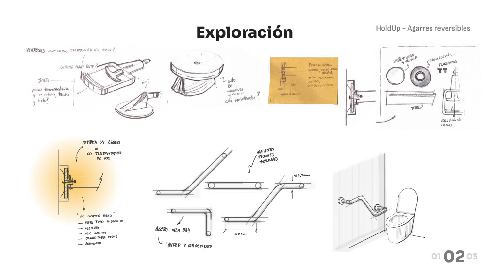
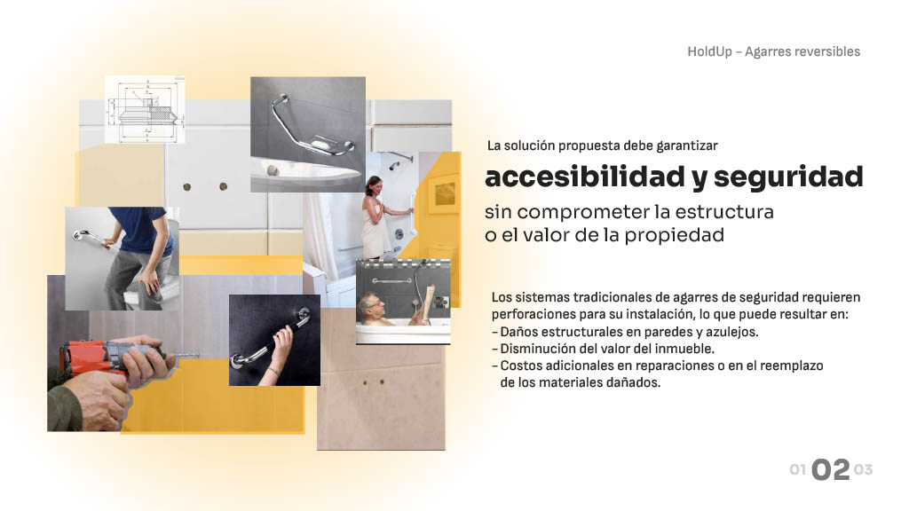
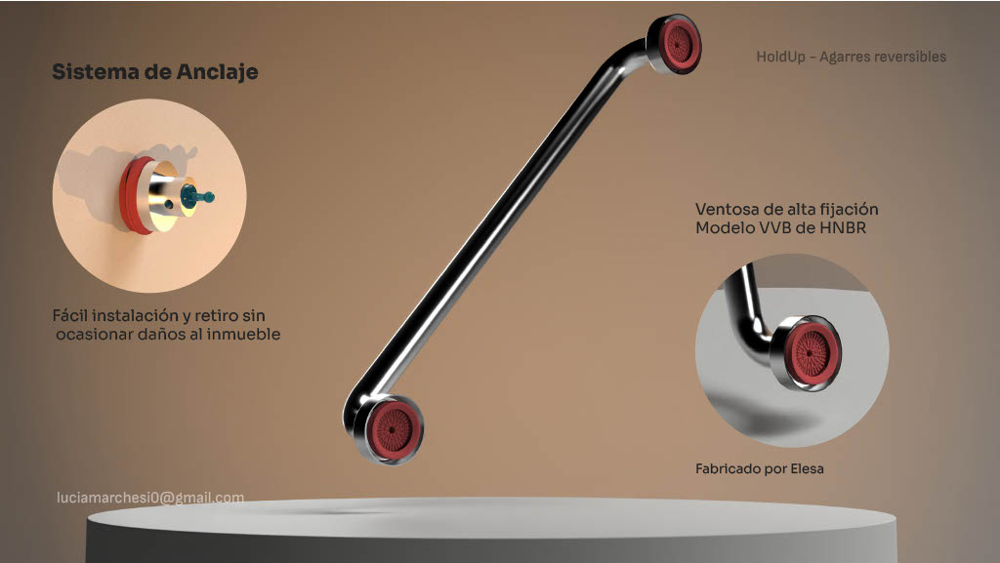
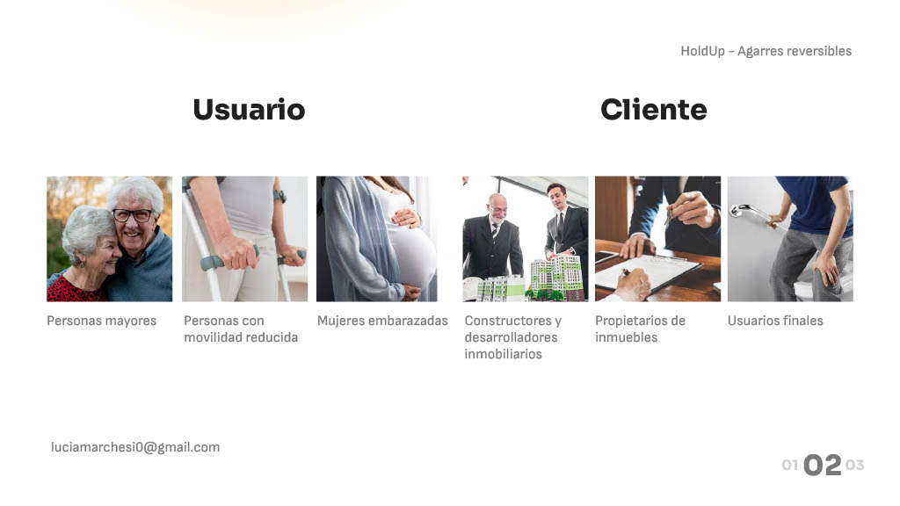
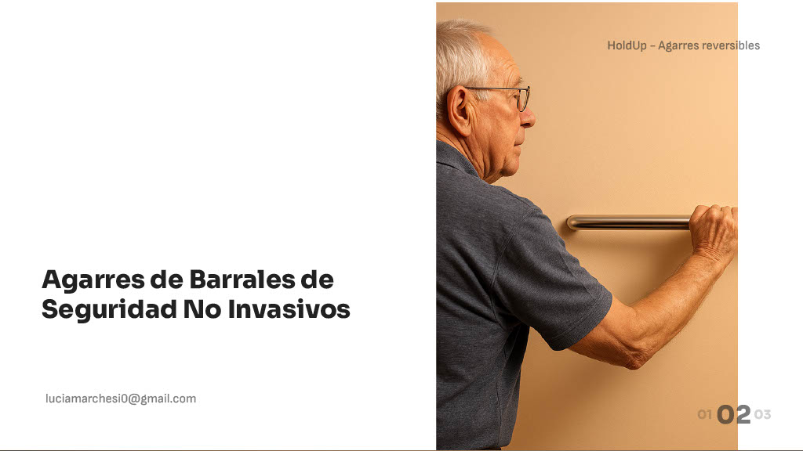
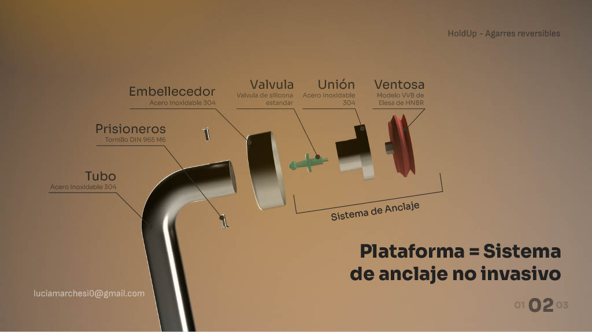
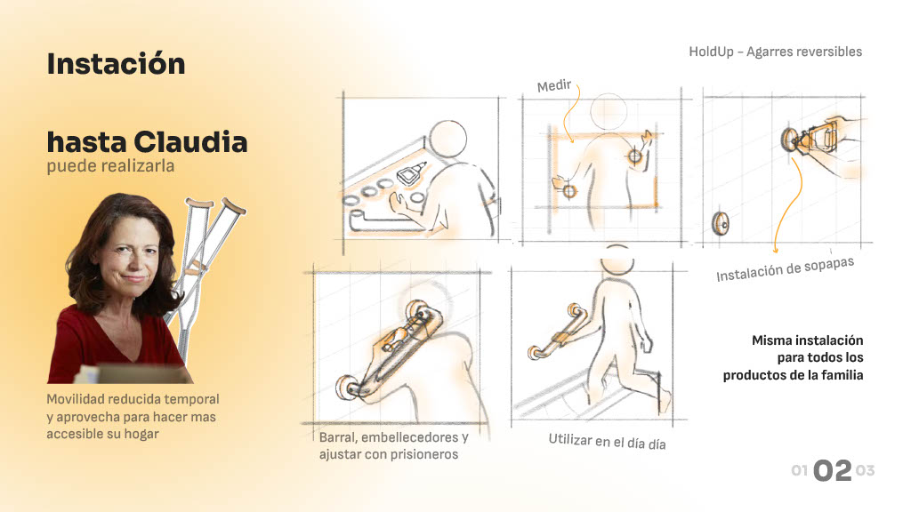
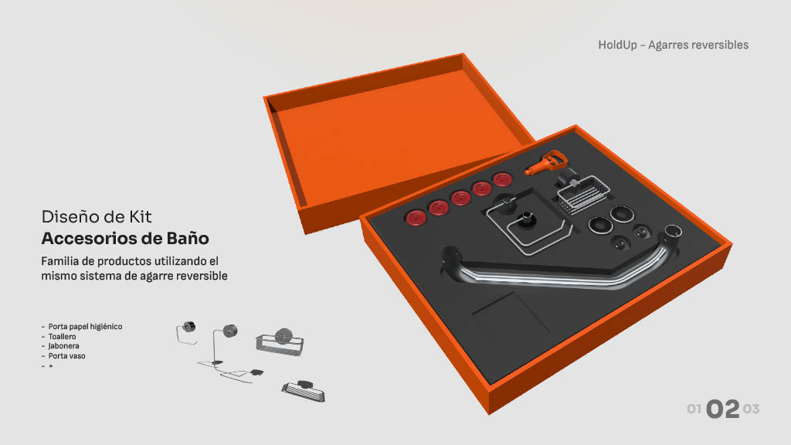
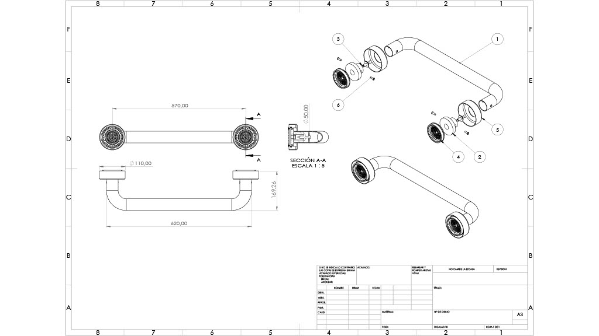

NON-INVASIVE SAFETY SYSTEM — 2025
HoldUp
Overview
HoldUp addresses the need for adaptable support solutions in spaces where traditional grab bars are not viable. It is conceived for users who require temporary or flexible assistance, and for contexts where preserving surfaces and avoiding construction work is essential.

The problem
Conventional bathroom support bars usually require drilling, tools and a permanent installation. That creates friction for renters, temporary recovery situations and households that need a fast solution without altering the space. In many cases, the barrier is not the lack of need, but the complexity of implementation.

The proposal
HoldUp proposes a high-resistance suction-based anchoring system that can be installed without tools or permanent modification. The project aims to combine safety, ease of use and a cleaner domestic aesthetic, moving away from products that feel purely clinical or visually intrusive.

System logic
The strength of the proposal lies in treating the grab bar not as a single isolated object, but as part of a broader system. Different lengths, placements and use situations can be considered under the same anchoring principle, allowing the solution to respond to diverse bathroom layouts and user needs.


Why it matters
HoldUp is valuable because it reduces the gap between needing support and actually being able to install it. By removing tools, damage and permanent intervention from the equation, the product becomes more accessible to a wider range of users, living conditions and moments of need.

Development criteria
The project is guided by three key criteria: reliable load resistance, easy placement and removal, and a visual language that feels domestic rather than medical. These criteria shape both the engineering logic and the user experience of the system.



Next steps
The next phase is to define load targets and testing protocols, validate long-term adhesion on common bathroom surfaces, and refine materials and finishes for durability, hygiene and ease of cleaning.